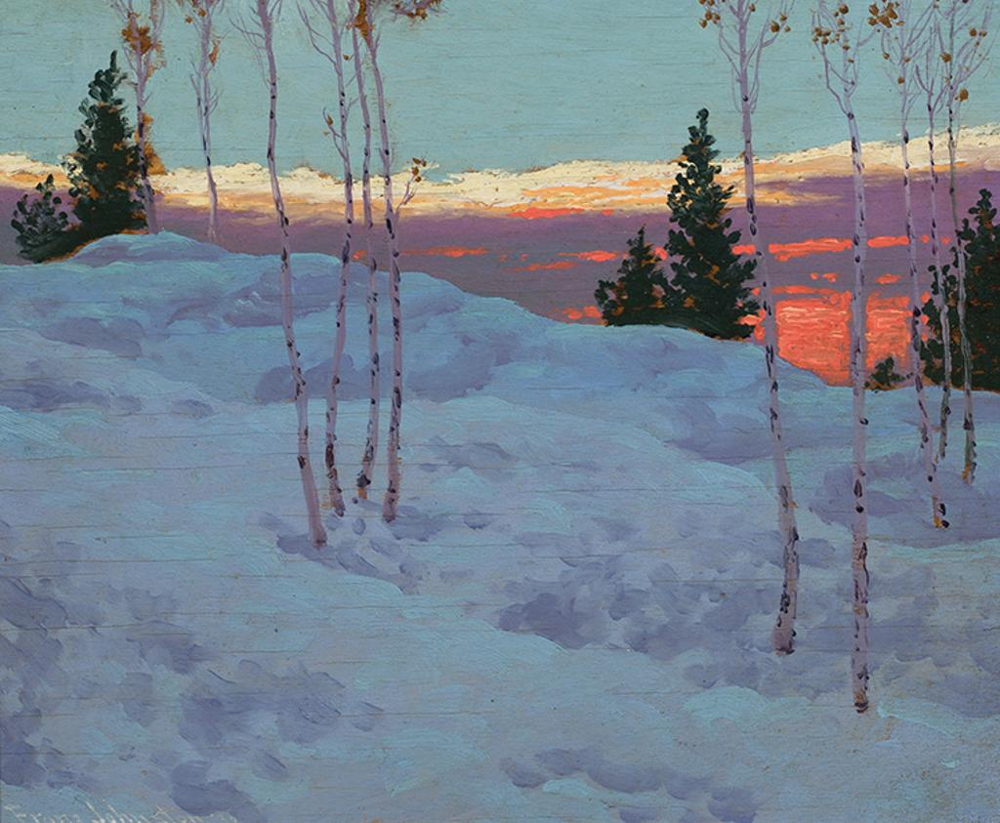

Diviners' Wing
The following entries are some of my ideas for future characters. I've been fortunate enough to play a lot of D&D, to the point that I've tried every class in Fifth Edition. But now that the 2024 revision is out, I've got some new things I'd like to try!
- Aasimar Fighter: I have this idea for a character who is essentially the embodiment of endless wars, but with a twist: marked by divinity for greatness, they've outlived everyone they've ever loved or fought alongside. They'd be a veteran who is simply tired, who keeps a reminder of everyone who's passed, and whose wings are not the pure white of an angel, but the dark and bloodstained ones of a vulture. It wouldn't be all doom and brooding though - I would like them to have found peace, settled down, and only keep fighting so that others don't have to.
- Tiefling Druid: I desperately want to play another druid, and I want to make her a witch. I want accusations of heresy and I want subtle magic, influencing plants and animals and the world around her rather than throwing a fireball. I really, really liked the depiction of the mage's magic in Guy Ritchie's King Arthur: Legend of the Sword and I think I can make that work pretty well in a game of D&D.
- Drow Bard: This will be the next bard I'll play, going all-in on spellcasting. However, I have a small problem, which is that I really don't like that bards have to use musical intruments as their spellcasting focus. To get around this, I'm going to purposefully limit myself to only using spells without a material component. This is going to make it a difficult character to play, but I'm curious if I can pull it off. I think I'll also describe her as singing her spells, which only seems appropriate for an instrumentless bard.
- Fairy Rogue: I've had so much fun playing my current fairy that I just can't help but want to play another! This one will be the polar opposite, though: instead of a healer who does her best to help anyone who needs it, this one will be a tiny kleptomaniac who can't help but collect pretty or valuable things. I think I want to give her a bit of a magpie's characterization and have her build a nest of her collections in another party member's bag. It could make for a fun interaction depending on how they react, and who knows, maybe I'll bring them something really useful once in a while!
- Elf Wizard: I played a wizard once before who was careful with her magic and subtle in its application. This is not that wizard. I've never played a character who exists just to blow things up, and that's definitely something I want to try. I'm thinking this one would be an elementalist, throwing out blasts of fire and ice and lightning. And as an evocation wizard, I can do this when my party is standing in the way and not have to worry about hurting them!
- Human Sorcerer: This is purely a mechanical concept, and it relies on playing the draconic bloodline subclass of sorcerer. Combined with the right starting ability granted by playing a human, I can be as durable as any melee class, letting me make full use of close-range spells without the risks normally involved with this for a spellcaster. It's a neat little niche that I've been wanting to try for a while. I have no idea if it'll be any good, but it certainly sounds like a lot of fun.
- Archfey Warlock: This is the most complete roleplay concept of my planned characters. Basically, I want to play a warlock using their pact of the chain ability, and have their familiar be their patron through a more equal sharing of power than normal. I've got this idea in my head of a fairy banished from their community for practicing necromancy, and so she resurrects a larger person to protect her while she's on her own. That person, the warlock, gets new life, but the fairy puts so much of their magic into the warlock that if one dies, they both do. I'm not sure if I want to play both characters at once yet, or give the fairy's roleplay reigns over to whoever the game master is.
Honestly, I love all of these ideas so much that I have no clue what I'm going to play next. But if any of them resonate with you, please feel free to use them! I'm always coming across new things to inspire me, and I hope I can provide that inspiration for someone else as well!
